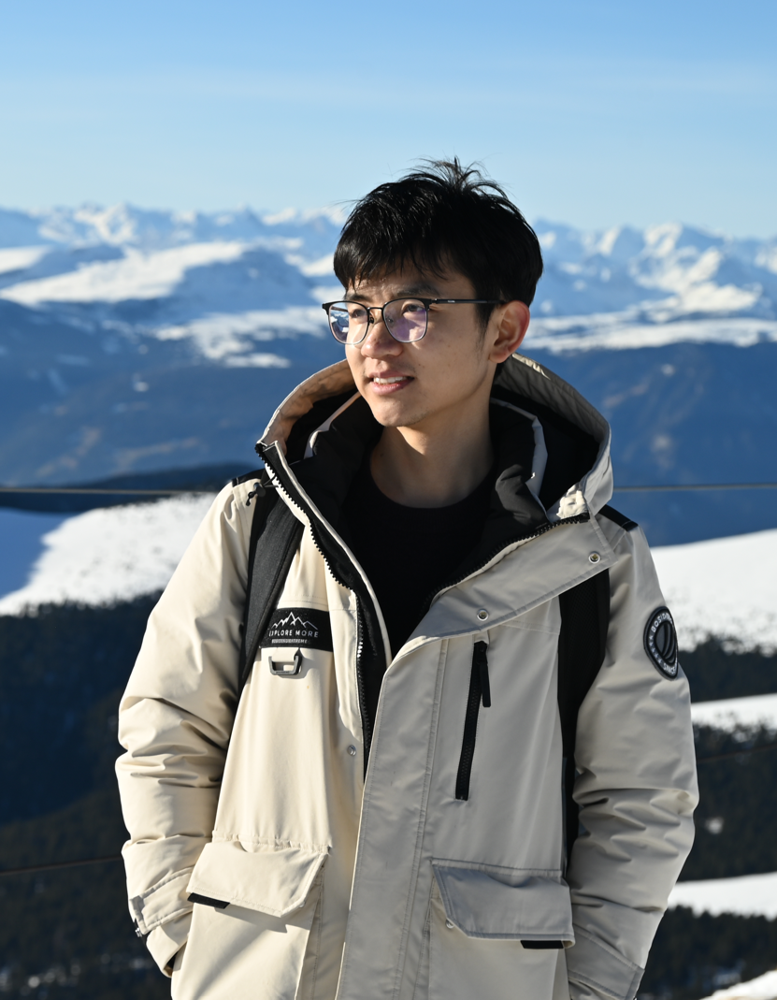
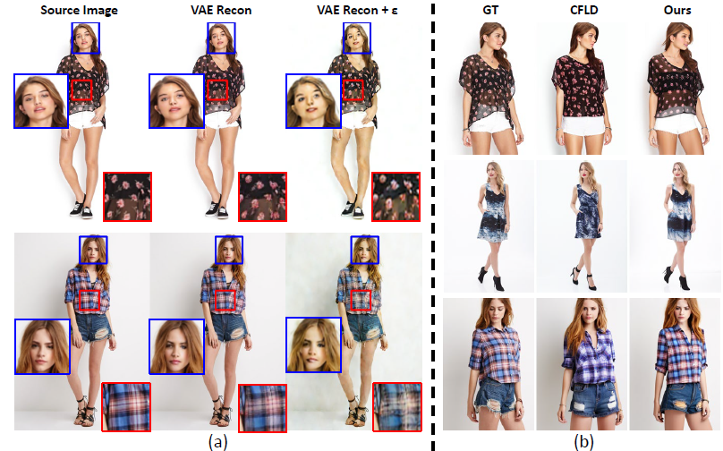
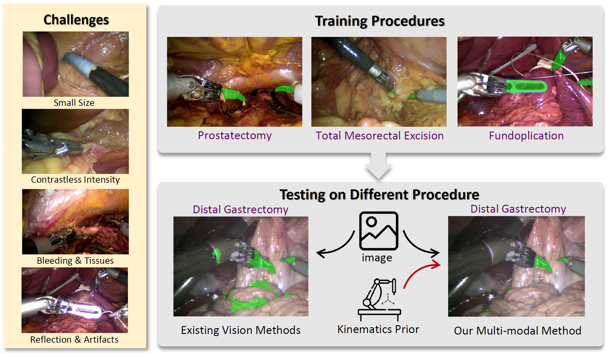
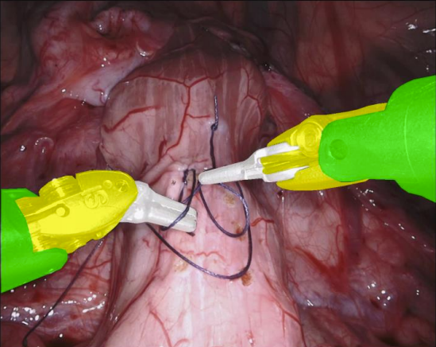

|
Jiaqi Liu
I am a second-year Ph.D. student at the University of Trento, supervised by Prof. Nicu Sebe. My current research interests are in generative models for visual applications.
Before my Ph.D. study, I got both of my master and bachelor degrees from Shanghai Jiao Tong University, majored in automation.
Email /
CV /
Scholar /
Github
|

|
|

|
Multi-focal Conditioned Latent Diffusion for Person Image Synthesis
Jiaqi Liu,
Jichao Zhang,
Paolo Rota,
Nicu Sebe
CVPR, 2025
code
/
arXiv
Proposes multi-focal condtions to refine the deteriorated sensitive regions for person image synthesis.
|
|

|
Visual-Kinematics Graph Learning for Procedure-Agnostic Instrument Tip Segmentation in Robotic Surgeries.
Jiaqi Liu,
Yonghao Long,
Kai Chen,
Cheuk Hei Leung,
Zerui Wang,
Qi Dou
IROS, 2023
paper
/
arXiv
First work to aggregate kinematic data to improve the procedure-agnostic robotic instrument segmentation by graph learning.
|
|

|
Discriminative Asymmetric Learning for Efficient Surgical Instrument Parsing
Jiaqi Liu,
Yu Qiao,
Jie Yang,
Guang-zhong Yang,
Yun Gu,
ICRA, 2021
paper
Discriminative learning in dual-branch network to efficiently parse the details and semantic target in real-time robotic parsing.
|
Work Experience
-
Chinese University of Hong Kong, Hong Kong. 10/2022-7/2023.
Research Assistant. focusing on kinematic guided robotic parsing.
Supervisor: Prof. Qi Dou.
-
Citic Securities, Shanghai, China. 11/2021-12/2021.
Research Internship, focusing on deep-learning based asset allocation and quantitative investment.
-
Robotic X, Tencent Inc, Shenzhen, China. 04/2021-09/2021.
Research Internship, focusing on grasping pose estimation.
Mentor: Dr. Yonggen Ling.
|
Awards
Excellent Graduate Award, SJTU, 2022
National Scholarship, 2021
Excellent Graduate Award, SJTU, 2019
Grand Prize, 5th Delta Advanced Automation Contest, 2022
|
|
{kind=link}